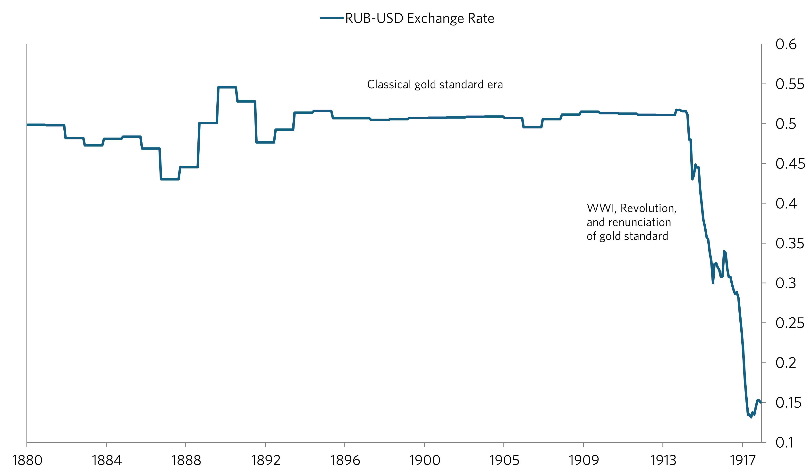
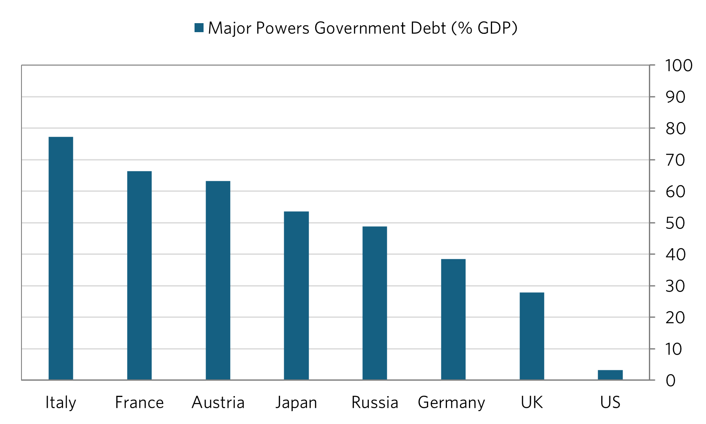
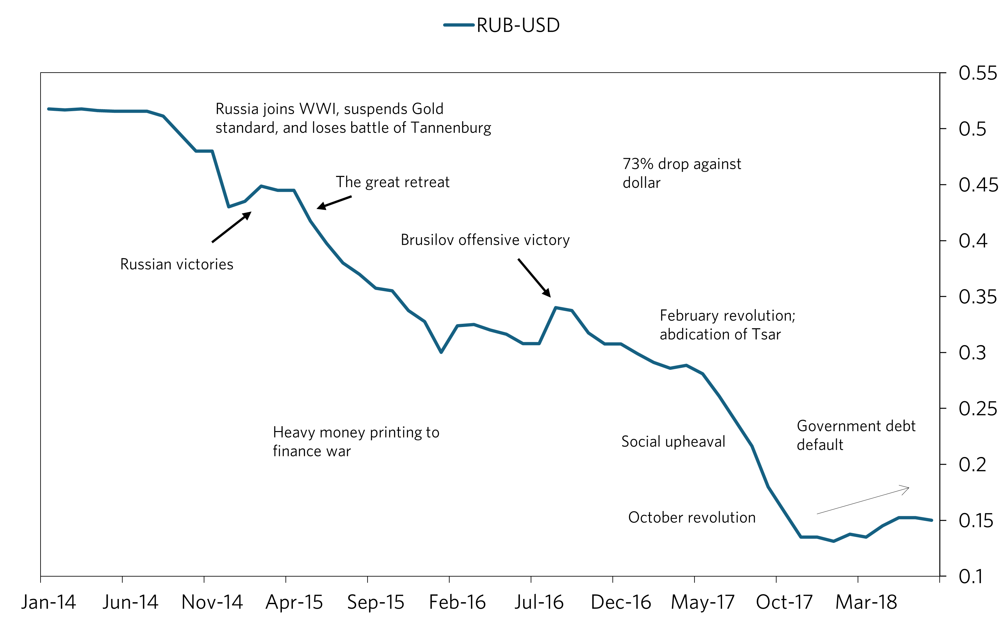
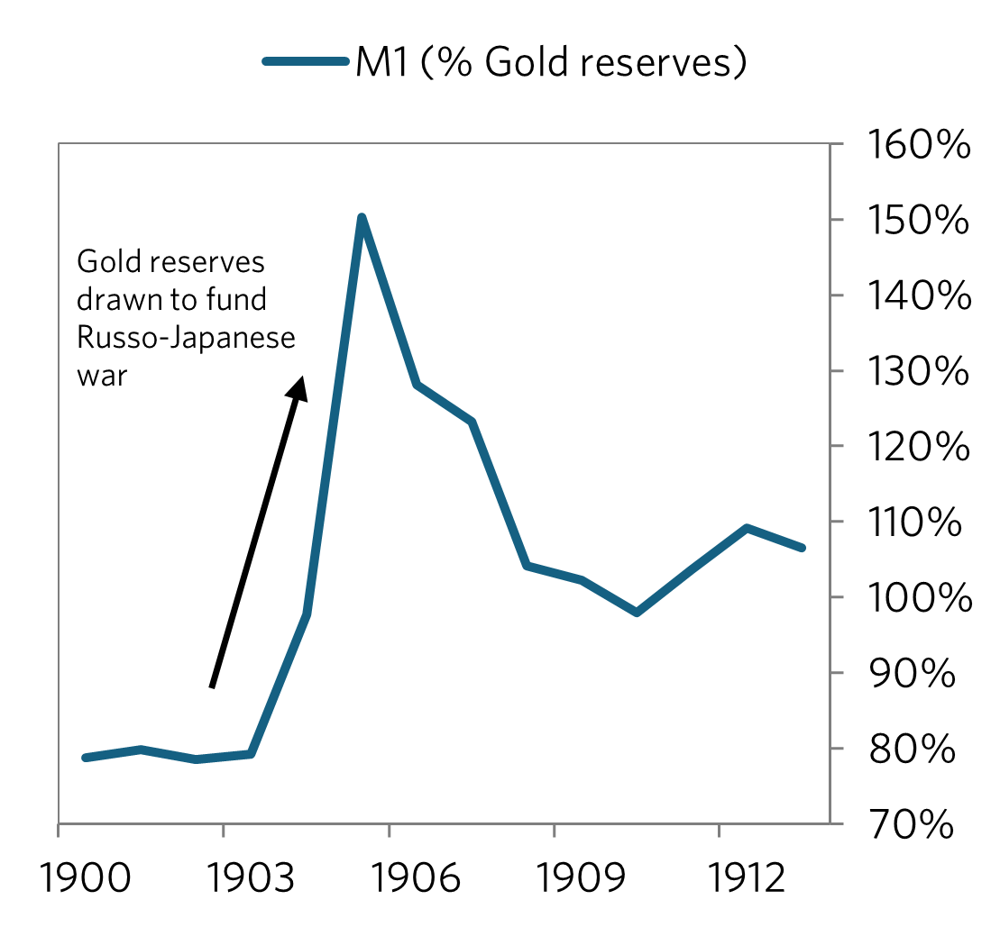
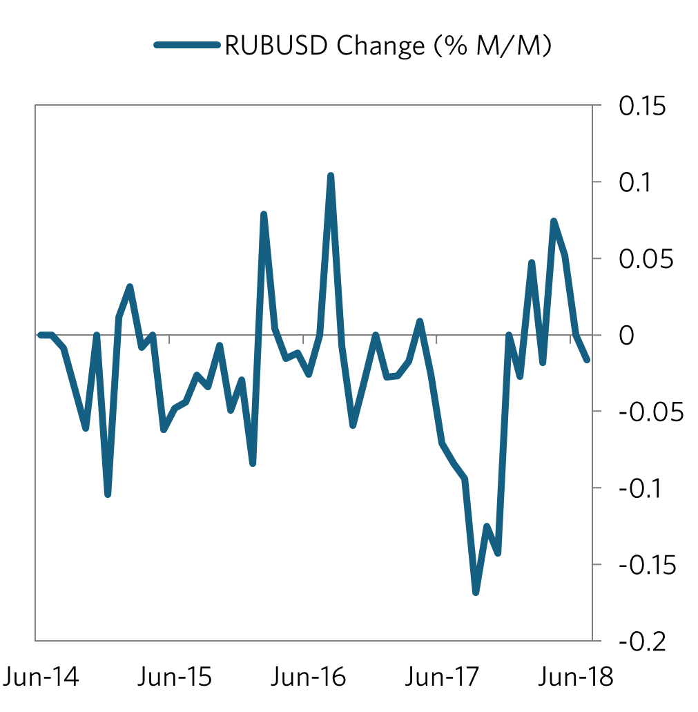
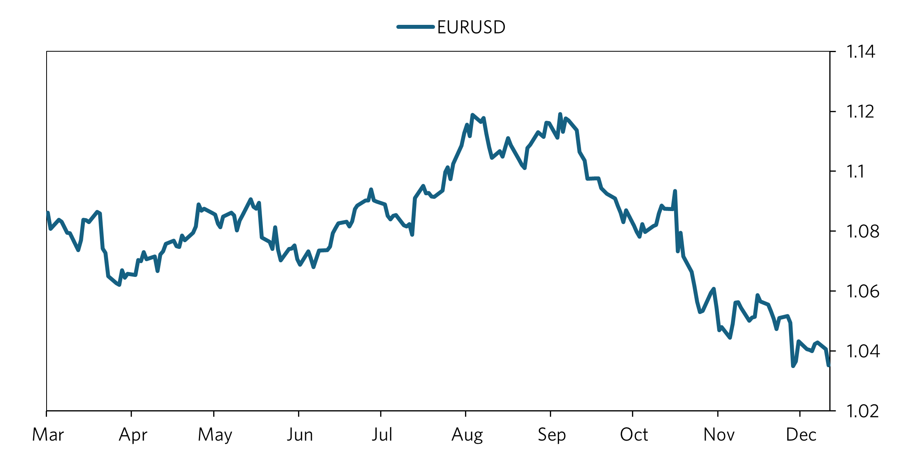
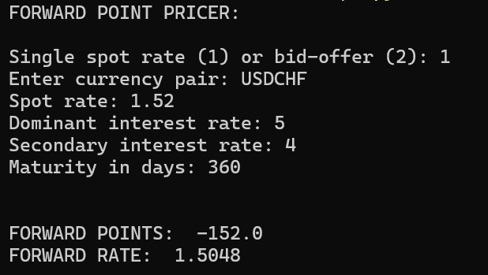
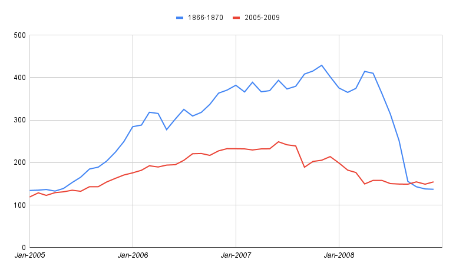

Russia remained on the gold standard from 1896 until 1914 which kept RUB-USD stable (except for slight fluctuations which are probably from changes in the money supply - compare the M1 chart vs the longer term chart to see what I mean). Russia left the gold standard in 1914 since a new war would mean drawdowns in gold reserves (as in the 1905 war). This would would leave them unable to support the gold standard, especially if there were a run on gold.

Prior to the war, debt as a percent of GDP was high (48%), but not as much as other major powers such as France (66%). However, this went up during the war as debt multiplied and economic activity collapsed, two catalysts in the decline of the Ruble. Industrial production fell close to 90% and rail traffic fell by 60% during the war period. 80% of factories were taken over for the war effort, leaving most production to be destroyed (as this is what happens with military equipment/supplies).
Other catalysts driving the downfall of the Ruble include:
(a) Large amounts of investments and debt held by foreigners (most notably the French) leaving the Ruble vulnerable to a pullback in foreign capital
(b) Suspension of the gold standard, money printing to finance the war and subsequent monetary inflation.
(c) General economic catastrophe: the numbers do not do the collapse justice - this was a time of shortages, higher mortality rates, and social unrest; to name a few. These are conditions which made it easy for a populist leader (Lenin) to take advantage of the situation and gain power.

During the war, battle outcomes seemed to have a significant impact on the exchange rate. However, the Ruble took its biggest header in the fall of 1917, after the Tsar had abdicated and their was widespread social upheaval. The Rich that were able to get out of the country before their deposits were seized by Lenin were likely exchanging their Rubles for other currencies at any rate (very low) they could, adding pressure to the currency.
Another interesting trend is the increase in the exchange rate following the repudiation of Russian debts by Lenin. The most likely explanation seems to be that any investors who wanted to get out (everyone) had gotten out already, leaving little downside for the Ruble.
 
Data sources: IMF, Federal Reserve Bulletin, The Making of Global Finance (Flandreau, Zumer)
1/2/2025 EURUSD Drivers

What seems to be the main driver of the EUR-USD exchange rate: relative inflation. From March thru August, US core CPI fell relative to Eurozone core CPI. This and anticipation of Fed rate cuts brought US yields down, and helped the Euro to rise relative to the dollar over the period. This movement stagnated in August, and in September, the Fed cut rates and inflation increased and remained stubborn (core has been at 3.3% for past 3 months, and headline has risen to 2.7%). Investors were and still are concerned about whether inflation is really on track to 2%, which seems to be the big reason why yields and the dollar have surged over the period (including other related reasons, such as policy from the new president and potentially even realignment of the beta of US debt). While headline has also increased in the Eurozone, there is still a big difference in relative inflation rates that will have to keep policy tighter in the US relative to eurozone. It appears we should see a stronger dollar until the inflation differential decreases more. We should see an exceptionally stronger dollar if the differential were to rise again from any developments in the new year. The Fed has also signaled a more hawkish stance at their last meeting, which supports this theme.

1/1/2025 Forward Points Pricer Link

Basic FX forward rate pricer. The bid-ask method still has some work that needs to be done, but the single forward rate calculator should be reliable. Coded in Python.
5-23-2024 Dec 1989 Heating Oil Case Study Link
How the December 1989 winter storms affected the heating oil market.
1-15-2024 Usury and the Industrial Revolution

Data Source: Federal Reserve Bank of St. Louis fred.stlouis.org
As you can see in the chart above up until roughly 1550, England suffered from stagnant prices, with Malthus' theory of population holding true. One factor in this turning around was the reversal of some usury laws in England in 1545, where they set a 'legal maximum rate' as opposed to the prohibition that was set forth in 1275, based on the church doctrine of the time. The allowance of lending/banking would ultimately would ultimately start picking up livings standards and innovation as consumer demand and access to capital increased. This increased capital access to innovators probably would lead to inventions such as the steam engine, etc. This would play into the industrial revolution and the transformation of the world to the way we know it now. It seems that we have to give a big thanks to the reversal of that law!
10-15-2023 Financial Crisis Correlation in Russia LinkSearch historical stock data to find a historical trend closest to the bubble during 2005-2007 in the Russian stock market. Will likely be expanded soon to include multiple countries as cross references(US, UK, RUS, etc.) to predict future stock prices given the magnitude of current trends. Using Python, I was able to scan through roughly 600 sections of past stock prices and utilize compare each to the period Jan-2005 - Dec 2007 utilizing euclidean distance. I programmed it to compare each of those sections to the current period and return whichever combination of the two were the three shortest euclidean distances, with surprising results. The program returned the period August 1866 through June 1869 as closest to the current period.
In Russian history, there was a recession in 1870-1871, as reflected in the chart which falls at the same time as the 2008-2009 recession happened. One important difference to note is the higher magnitude of change in 2005-2007 vs the historical period. This is clearly due to the the absence of high frequency traders and the small amount of people owning stocks in the 1800s. Therefore, comparing the two still has significance. If one had done this model in June 2007, with russian rates held steady at 6.5%, it would not have been an unambiguous decision to short the market. These two time periods, while correlated, still hold differences in inputs. However, one input that is not very different is human psychology, which hasn't changed a whole lot in the past 200 years, with people following the herd in almost everything they do now and then. While it would have been unambiguous that the market was getting high and that I dropdown was probably due within the next few years, the hardest thing to determine is exactly how high a bubble will go! In 2007, it would have been unambiguous that the bubble in the US was going to come to an end given that vast amount of unregulated securities being issued in the United States. However in Russia, crude prices were still strong in June 2007, meaning that it would have been unwise to immediately short the market following this indicator. It would have been useful to look at the extreme bubble in the United States, which had ripple effects on the crude prices which was a key driver in the russian recession of 2009. GDP in Russia went up in 2007/2008, and the market dipped (likely due to decreased expectations of future preformance, which came to light in 2009 with the collapse in oil prices) but held up. Therefore, it would have been wise to short the Russian stock market in late mid-late 2008; which you would have done unambiguously if one was able to accuratly project a drop in crude prices (which in hindsight seems easy, but in reality it would have been difficult but not impossible). Speaking more broadly, every bubble must come to an end, but the question is when. In any bubble, if one is able to see how high the bubble is relative to historical measures and mesaure how strong the inputs are that are driving these changes, one would have a good grasp on whether the bubble would get as big as or bigger than historical bubbles. Another inicator I will work on soon is one in which a long term trend line is extrapolated across the S&P 500, recording the highest and lowest std. deviations in the set while comparing that to the std. deviation of the present. A model like this combined with an analysis of the strength in inputs driving the ups and downs of the market would be helpful in projected future market movements, along with the model used above. Overall, while this tool is very valuable, one must also compare inputs driving the trends in order to verify there significance in any trade. See python code in link.
CorrRFinds a portion of a historical period that most closely matches a current trend in a stock index. Coded in Python.
Market TrackerCreated to view stock market data, including stock and commodity prices, financial news, and company financials in order to make correct decisions when trading in the stock market. Covers a broader array of information on the markets. Includes historical economic data for Russia and the United States, with a focus on Russia due to lack of data available. Coded in html and javascript.
Stock Statistic TrackerJavascript program to fetch basic statistics on companies. Includes data for price, market cap, 52 week change, and contains a method to save how many shares are own of a stock. Covers specific statistics on particular stocks. Coded in javascript.
Trader Market ExpectationsIt is a wall street theory that the last 30 minutes or so of trade in the trading day are a reflection of how traders really feel about the market, or what they expect to happen, as they want to make a correct decision before the market closes. This python projects aims to test that theory over many years for a variety of stocks. This program combines those 30 minute stretches into a bigger chart. This allows us to compare the combined 30 minute movements to other longer term stock charts to see if there is any correlation. Coded in python and a little html.